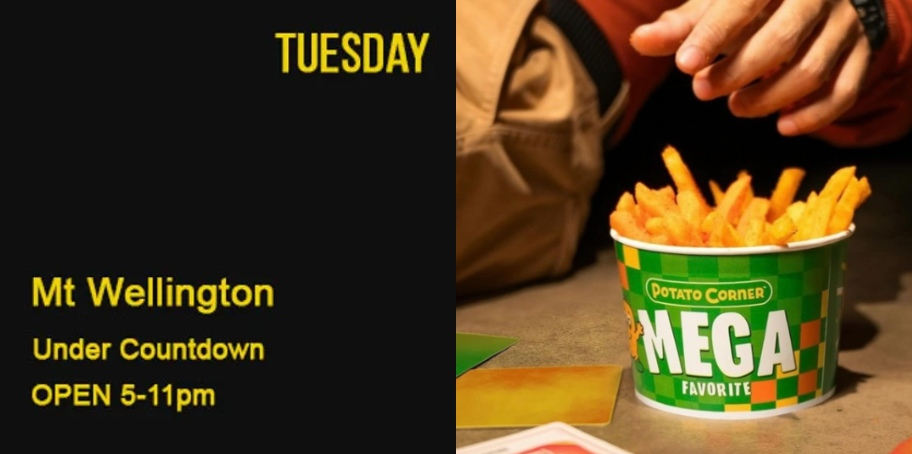
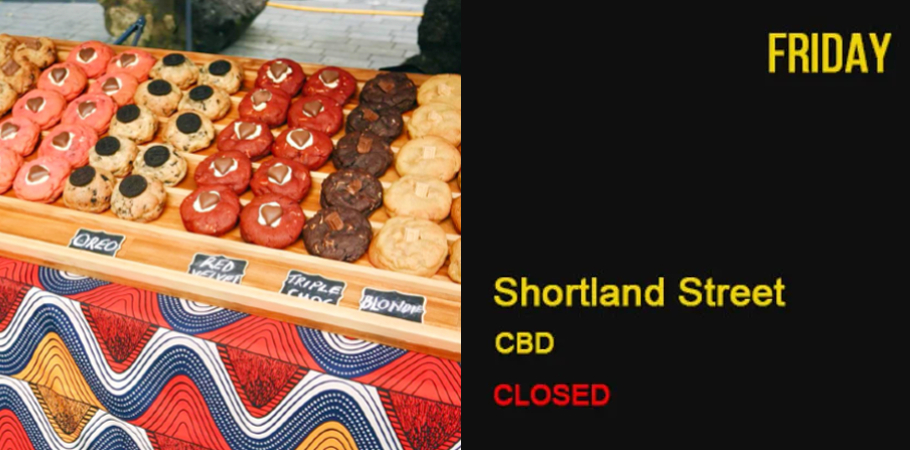
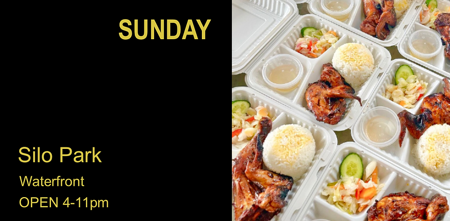

Welcome to Auckland Night Markets:
Unveiling the Multicultural Flavours of New ZealandAuckland Night Markets are now in nine different locations across Auckland,
along with one market in Hamilton. Starting in Pakuranga in 2010, the Night Markets have steadily expanded
and become a regular event in the local entertainment calendar.
At Auckland Night Markets, we pride ourselves on being the epitome of culinary delight
and cultural fusion in the heart of New Zealand.
Our markets are an enchanting tapestry of flavors, aromas,
and experiences that bring together locals and visitors alike,
celebrating the rich diversity of Auckland's vibrant food scene.
As the sun sets and the night comes alive, our markets transform into a magical wonderland.
The lively chatter of vendors and visitors mingles with the aroma of sizzling delicacies,
immersing you in an unforgettable sensory experience.
A Social Hub For All
Auckland Night Markets
1 / 10
2 / 10

3 / 10

4 / 10
5 / 10
6 / 10
7 / 10

8 / 10
9 / 10

10 / 10